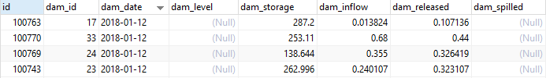

วิธีตรวจสอบข้อมูล เขื่อนกรมชล-ขนาดใหญ่ กรณีที่มีการเปลี่ยนแปลงข้อมูลต้นทาง (มีการเปลี่ยนชื่อหัว subject mail)
- ตรวจสอบข้อมูลจาก database ว่าข้อมูลไม่อัพเดจจริง โดยไปที่
- Host - 192.168.12.136
- phpPgAdmin - https://192.168.12.136/phpPgAdmin/
- Schema - public
- Table - dam_daily
-
รันคำสั่ง sql เพื่อดูข้อมูลล่าสุด
SELECT * FROM "dam_daily" ORDER BY "dam_date" DESC
-
จากรูปด้านบน ถ้าข้อมูลไม่อัพเดจถึงวันปัจจุบัน ให้ตรวจสอบการเชื่อมโยงข้อมูลของ Thaiwater30 โดยเข้า Browser - http://web.thaiwater.net/thaiwater30/login แล้วทำการ Login เข้าสู่ระบบ แล้วไปที่ ระบบสนับสนุนการบริหารจัดการ > เมนูเชื่อมโยงข้อมูล > ตั้งค่าการ download ค้นหา rid-big_dam แล้วทำการ play เพื่อรัน download อีกครั้ง ดังภาพที่ 2

-
จากนั้นตรวจสอบข้อมูลอีกครั้งดังข้อ 1 ถ้าในกรณีที่ข้อมูลยังไม่อัพเดจอีก ต้องทำการตรวจเช็คการเชื่อมโยงข้อมูลที่ละขั้นตอนได้แก่ download, convert, import โดยเริ่มจากการ download ตรวจสอบว่าข้อมูลถูกดาวโหลดมาจริง ต้องทำการไปเช็คข้อมูลที่ต้นทางก่อนว่าข้อมูลทางต้นทางมีการอัพเดจหรือไม่ โดยเข้าไปที่ email : rid bigdam เขื่อนขนาดใหญ่กรมชลฯ
- user : bigdam@haii.or.th
- pass : Bigdam2012 จากการตรวจสอบ mail มีการเปลี่ยนชื่อ subject mail ไม่สามารถจับรูปแบบที่แน่นอนได้ แต่มีการอัพเดจข้อมูลปกติ
-
เนื่องจากข้อมูลต้นทางมีการเปลี่ยนแปลง จึงต้องไปแก้ไขการตั้งค่า download โดยไปที่ ระบบสนับสนุนการบริหารจัดการ > เมนูเชื่อมโยงข้อมูล > ตั้งค่าการ download แล้วค้นหา rid-big_dam แล้วกดแก้ไข

-
จากนั้นระบบจะแสดงการตั้งค่าดาวโหลด ไปดูที่การตั้งค่าโฮสตอนนี้เป็น bigdam%40haii.or.th:Bigdam2012@incoming.mail.go.th?subject=%E0%B9%80%E0%B8%82%E0%B8%B7%E0%B9%88%E0%B8%AD%E0%B8%99%E0 %B8%82%E0%B8%99%E0%B8%B2%E0%B8%94%E0%B9%83%E0%B8%AB%E0%B8%8D% E0%B9%88 copy ส่วนของค่า subject= %E0%B9%80%E0%B8%82%E0%B8%B7%E0%B9%88%E0%B8%AD%E0%B8%99%E0%B8% 82%E0%B8%99%E0%B8%B2%E0%B8%94%E0%B9%83%E0%B8%AB%E0%B8%8D%E0%B9%88 ไปแปลงที่เว็บ https://meyerweb.com/eric/tools/dencoder/ จะได้คำว่า "เขื่อนขนาดใหญ่" การทำงานของ diver: imap:// คือการอ่านข้อมูลจาก mail โดยเซตค่าต่างๆตามโฮสที่ตั้งค่า ทั้งนี้จากการตรวจสอบ mail มีการเปลี่ยนชื่อ subject mail ไม่สามารถจับรูปแบบที่แน่นอนได้
-
จากนั้นแก้ไขโดยการตั้งให้ subject= ค่าว่างเพื่อให้โค้ดไปวาด mail ที่มีวันที่ตรงกับปัจจุบันเท่านั้นโดยไม่ต้อง filter subject mail ที่มีคำว่า “เขื่อนขนาดใหญ่” เนื่องจาก mail มีไว้สำหรับส่งข้อมูลเขื่อนขนาดใหญ่เท่านั้น จึงไม่จำเป็นต้อง filter subject mail ดังนั้นจึงตั้งค่าโฮส ดังรูปที่ 6 แล้วทำการกดบันทึก

-
ทำตามข้อ 3 อีกครึ่งเพื่อทำการรัน และตรวจสอบข้อมูลตามข้อ 1 อีกครั้ง